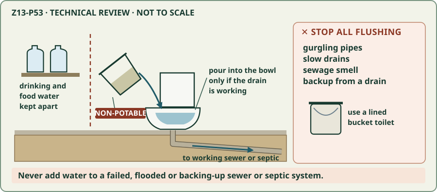

Z13-P53 · Home survival and utilities · New manuscript
Respect sanitary greywater boundaries during extended home water rationing
Reuse clean rinse water responsibly for toilet flushing without spreading skin, food, or soil pathogens inside the home.
When it applies · Multi-day outages where non-potable water is rationed for flushing functioning municipal/gravity toilets.
Equipment · Clearly marked greywater bucket (strictly separate from drinking jugs), toilet-bowl pour routine, and local health rules.

Actions
- Distinguish light greywater (clean dish-rinse or hand/bath water free of raw meat juices, bleach/harsh solvents, or fecal matter) from contaminated blackwater (toilet/diaper/raw-meat/sewage water)—ONLY light greywater is appropriate for emergency gravity-toilet bowl flushing.[U13, U07]
- Pour flush water briskly straight into the toilet BOWL (roughly 1 to 2 gallons triggers a standard gravity siphon flush) ONLY when you have verified the municipal sewer or gravity septic line is functioning and NOT flooded or pump-blocked.[U07, U13]
- NEVER store greywater for more than 24 hours (bacteria multiply rapidly and turn foul), NEVER use greywater on edible garden leaves, and NEVER let greywater touch drinking-water jugs or kitchen food counters.[U13, P03, W06]
Failure recognition · Storing soapy laundry water in an unlabeled drinking jug for a week or pouring bucket water down a toilet connected to an unpowered septic lift pump.[U07, U13]
Verify · Confirm sewer/gravity drain is open before flushing, greywater bucket is labeled NON-POTABLE, and water is used within 24 hours.[U07, U13]
Stop or change course · Slow draining, gurgling pipes, or foul odor from floor drains halts ALL toilet flushing immediately in favor of bucket containment.[U07, U13]
Evidence and editorial notes
- P03 · University of Minnesota Extension · Planting the Vegetable Garden (current web edition)
- Section: Watering, Mulching, Crop Rotation, and Integrated Pest Management · Conditions: Home vegetable plots across seasonal dry/wet swings
Support: Water deeply at the soil base rather than overhead foliage to conserve moisture and curb fungal disease, mulch soil to stabilize temperature and weeds, rotate plant families across seasons, and identify pests before choosing least-toxic controls.
Limitations: Untreated rainwater or suspect surface water should not be splashed onto ready-to-eat leafy crops immediately before harvest. · Conflicting evidence: None; aligns with FSG-4 clean produce handling.
Editorial note: Grounds resilient low-input gardening and biological pest management. · Specialist reviewer: Extension horticulture and integrated pest management
Primary source · checked 2026-11-24 - U07 · US EPA · Septic Systems (Onsite/Decentralized Systems) (current web edition)
- Section: Septic Systems > Power Outages, Floods, and Water Conservation · Conditions: Households with onsite septic systems during electrical outages or flooding
Support: Conserve household water sharply during outages (especially with pump-assisted septic tanks), avoid driving over drainfields, never pump out a flooded tank prematurely (buoyant tanks can float), and have licensed professionals inspect flooded systems.
Limitations: Using high-volume household plumbing when lift pumps are dead backs sewage directly into basements. · Conflicting evidence: None; critical outage wastewater boundary.
Editorial note: Grounds septic-system limits and outage water conservation in Z13. · Specialist reviewer: Onsite wastewater engineering and public health
Primary source · checked 2026-11-24 - U13 · CDC · How to Make Water Safe in an Emergency (2024-09-19)
- Section: Sanitation, Hand Hygiene, and Emergency Waste Containment · Conditions: Household water-service or sewer interruption
Support: Maintain separate handwashing stations using safe water and soap (or alcohol hand rub when hands are not visibly soiled), line emergency bucket toilets with heavy bags and tight lids when sewer service is unusable, and never mix bleach with ammonia or acids.
Limitations: Improvised sanitation is a temporary containment bridge until municipal sewer or licensed sanitation resumes; follow local health department disposal orders. · Conflicting evidence: None; prevents fecal-oral outbreaks and toxic chloramine gas mixing.
Editorial note: Core household sanitation and chemical-mixing boundary in Z13. · Specialist reviewer: Environmental health and sanitation specialist
Primary source · checked 2026-11-24 - W06 · CDC · How to Create an Emergency Water Supply (current web edition)
- Section: How to store emergency water; Safe storage containers · Conditions: Potable water intended for emergency storage
Support: Prefer sealed commercial water or clean food-grade tight-closing containers. Avoid containers that held toxic chemicals.
Limitations: Container shelf durability and rotation depend on plastic/material type and storage heat. · Conflicting evidence: None; reinforces strict raw-vs-clean segregation.
Editorial note: Used to enforce labeling and dedicated raw/potable vessel separation. · Specialist reviewer: Drinking-water safety and public health
Primary source · checked 2026-11-24
Source lineage · CDC Water and EPA Septic; new manuscript · Classification · New manuscript.